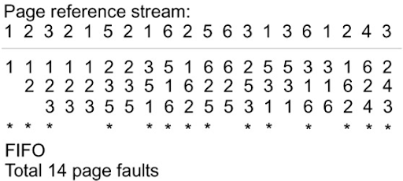

<head>
	<titile></title>
<body bgcolor="lightblue">
		<font color="yellow"><h1><center>First In Firs Out (FIFO)</center></h1></font>
<font color="red"><h2>First In First Out (FIFO) – This is the simplest page replacement algorithm. In this algorithm, the operating system keeps track of all pages in the memory in a queue, the oldest page is in the front of the queue. When a page needs to be replaced page in the front of the queue is selected for removal.</h2>
</font> 
    
<ul>
<li><h1><b><u><a href="pagereplacement.html">Home</a></u></b></h1></li>
<li><h1><b><u><a href="fifo.html">Run Algorithm</a></u></b></h1></li>

</ul>

</body>

</head>
